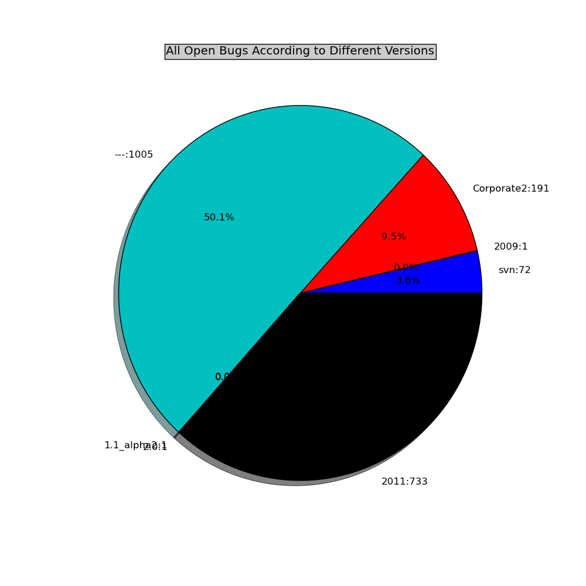
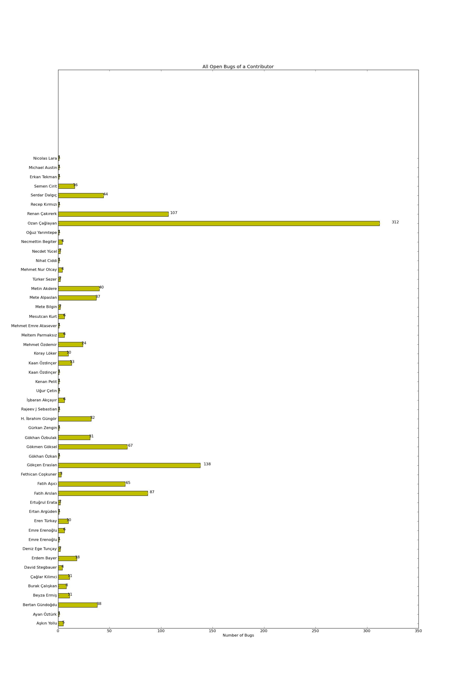

Navigation
Home
»
Events
»
Recent Events
»
Bug Analysis
»
All Opened, Reopened or Assigned Bugs
Table of Contents
All Opened, Reopened or Assigned Bugs
All Opened, Reopened or Assigned Bugs for Different Versions
All Opened, Reopened or Assigned for All Contributors
All Opened, Reopened or Assigned Bugs
¶
Until:
21-10-2011
All Opened, Reopened or Assigned Bugs for Different Versions
¶

All Opened, Reopened or Assigned for All Contributors
¶
